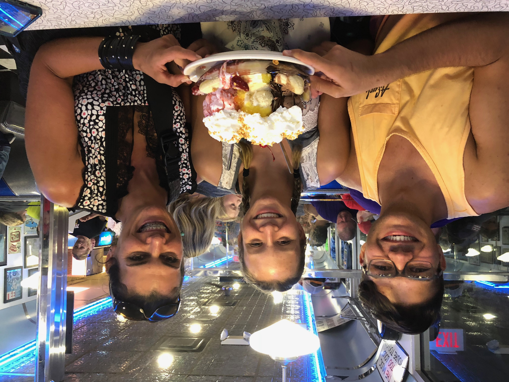

Hello, My Name Is Elizabeth Collins And Welcome To My Blog!?!
Here are a few things about me

My favorite hoddy is riding horses! I ride every chance I get. I´m adventurous, daring and love to be outside with nature

Ice Cream is always a go to!!!!! I mean who doesn´t enjoy some cold happieness!!

I am very active and do alot of sports such as competative swim. I have been swimming for 6 years and have gone to states in Knoxville and swam an UT 3 times getting 6th in the state in a 200 free relay! I also compete in sprint races such as the 50 free and 100 free getting to states in those events as well


I also play soccer, and have recently started playing for my highschool. We have recently played against our rival (Tullahoma) for the first and last time as our pre-season game and won 2-0!!

I dance and do regular dance classes and competition dance classes. I not only love to dance but I love my dance family. My dance coaches, Ashlie and Shelby, push me to my full potential.
FBLA or Future Business Leaders Of America is my favorite club that I participate in at my school. We not only build a float for the homecoming parade, but we compete in Regional and State level competitions such as Intro to Business Comunications, Accounting and so much more. I have made some of my best memories with this club when we go to chattanooga for states!!
Most importantly I have the best family ever. My mom, dad and brother are my number one supporters, they push me do my impossible and then some. I wouldn´t be able to do all I have/will do without the support from them. My brother doesn´t like to admit it but he likes me. We have a love hate relationship as do most siblings. He´s always there when I need to rant about mom or dad, and puts up with me bugging him all the time.
My second family are quit the inspiration also. David and Al are my "cousins" that I look up to alot, with their smarts and horseback riding skills. I´d like to send an appriciation s/o their way for them putting up with me!